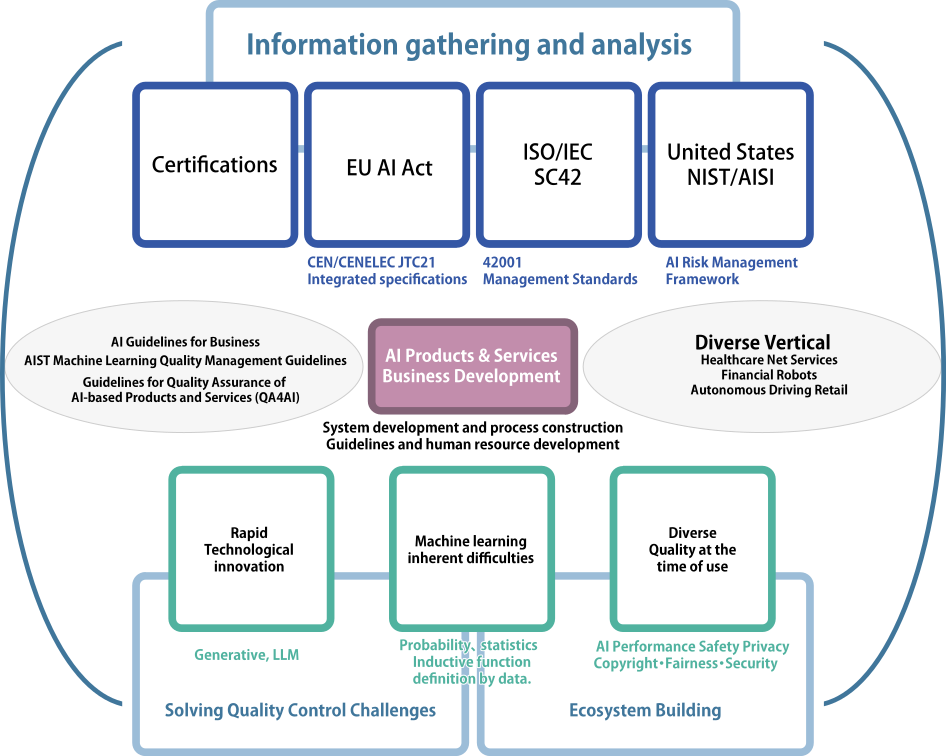
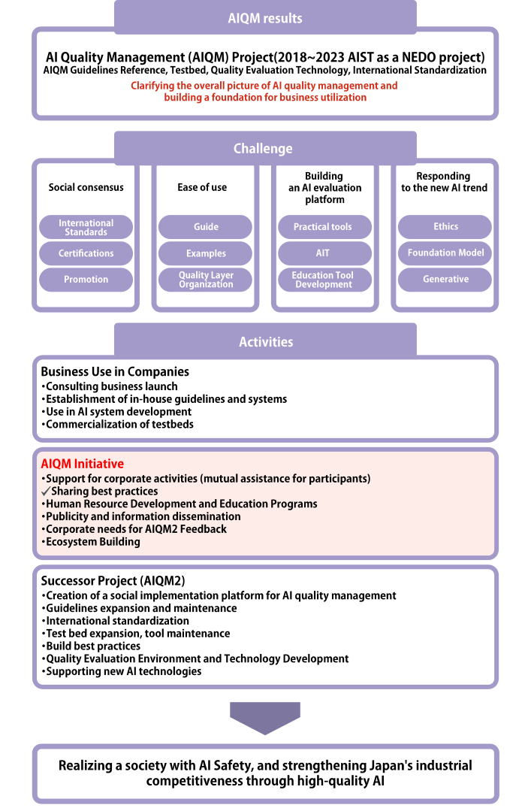
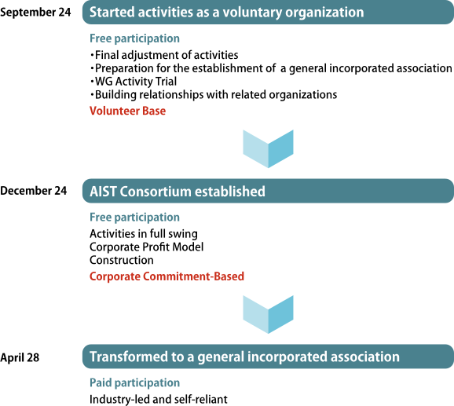
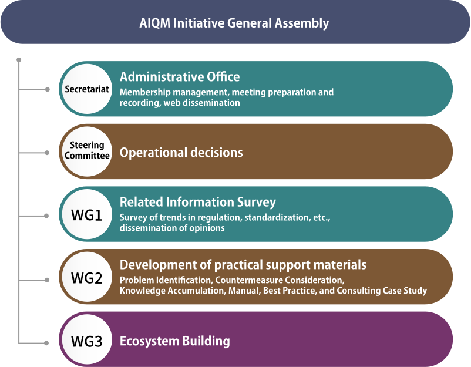

ConsortiumConsortium
Background of installation・History・Aim
- The rapidly expanding AI business environment is changing drastically, and the importance of quality management for companies engaged in global business using AI is increasing, as is accelerating international collaboration to ensure AI safety, along with the development of various regulations and standards such as the EU AI Act and the enactment of the ISO/IEC42000 series.
- Since 2018, AIST has been engaged in research and development related to AI quality management and has achieved many results, including the development of the "Machine Learning Quality Management Guidelines.“
- Since the establishment of ISO/IEC/JTC1/SC42 (AI) in 2017, it has led the coordination of domestic deliberative bodies and the development of various important standards, enhancing Japan's presence in the international standardization community.
- There are no industry associations on the AI business in Japan, and organizations are needed to assist each other in areas of cooperation and compile industry opinions on international standardization. This is also in line with the opinion of the Information Industry Division of the METI Business Affairs Bureau, which oversees the AI business.
- With the aim of helping participating companies collaborate in areas of cooperation, such as responding to the rapidly changing business environment of the global AI business, and AIST has decided to establish the "AI Quality Management Initiative" in the form of an AIST consortium, we hope that interested companies to participate.
Challenges of AI Quality Management in AI Business Operation

AIST's Achievements and Strengths to Date
AIQM (AI Quality Management Project) 2018~
- Machine Learning Quality Management Guidelines
✔️ 2020 1st Edition ~ 2024 4th Edition, English Edition 1st ~ 3rd Edition
✔️ ISO/IEC TR5469 (AI Functional Safety) contributions - Reference Guide, Quality Assessment Sheet
- Development and Publication of Testbed “Qunomon”
- Development of various quality evaluation technologies
AI International Standardization Activities
- SC42 International Standardization Activities (Combiners, Experts, Editors, National Deliberative Groups, Lobbying)
- CEN-CENELEC observer participation、AI Trust Consortium participation
- Close collaboration through the U.S. NIST MOU
- Various events held (July 2024: International Symposium on Artificial Intelligence Standardization)
- Various projects led (Human Machine Teaming, Human Oversight, AI Data Quality Management, etc.)
Establishment of industry associations that leverage AIST's strengths

Initiative activities
AIST Consortium was established in December 2024. Recruitment of participants began in February 2025, and activities began in April 2025.

Management System

Benefits of Participation
- It can collect cutting-edge information necessary for AI business operation.
- You can understand what to do and how to carry out AI business, such as the legal system and certification system.
- Through a thick pipe with Japan's AISI, we can make recommendations to the international AI regulatory community.
- Regarding quality evaluation, you will not have to worry about how far you should go in your company.
- You can show your customers that you are serious about quality management.
- Cooperation around cooperation areas allows you to focus resources on areas of competition.
- Participating in the AI business ecosystem provides a promotional channel for business expansion.